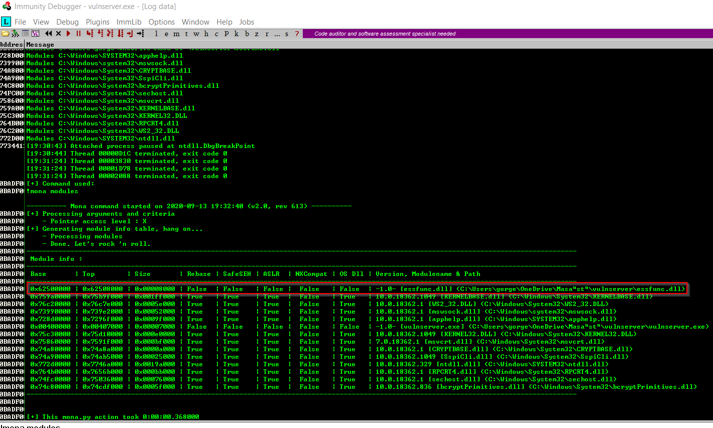

when we talk about finding the right module what we're saying is we're looking for a dll or something or something similar inside of a program that has no memory protections.
now there is a tool out there called mona modules that we can use with immunity debugger to achieve this.
(https://github.com/corelan/mona) in this link we need to download mona.py and locate in that location: C:\Program Files (x86)\Immunity Inc\Immunity Debugger\PyCommands and then start vulnserver and immunity.

we wrote that highlighted comamnd and that screen immediately popped up.
these Rebase, SafeSEH, ASLR, NXCompat, OS Dll are protection settings and we want to these as false another thing is that we're looking for something attached to vulnserver which this is the first one. So a prime candidate immediately is this essfunc.dll
before that we want to find hex code equivalent of JMP ESP command. We will do that with nasm_shell.

and now we want to find that command as use FFE4 inside the essfunc.dll file

and we found that outcome and we'll try these
let's write a script for this.

this address wrote in reverse order this is a x86 achitecture's attribute.
x86 architecture actually stores the low order byte at the lowest address in the higher order byte at the highest address. So in here we're actually trying to fill EIP with that address. To catch this we'll set up a breakpoint for that purpose.


okay then press F2 and this should be blue and now we set up a breakpoint.
now immunity should be able to catch when this address overwrite the EIP. let's execute the script.
immediately immunity started to blink.

actually we could control EIP now we can put a shellcode into ESP and now EIP point that with JMP ESP command.
if we didn't set up a breakpoint this actually will break the program and we cant see whether this address overwrite the EIP or not.
when we did that it actually pause right here for further instructions from us. We don't have anywhere to jump right now we just want to know that we're hitting this address.